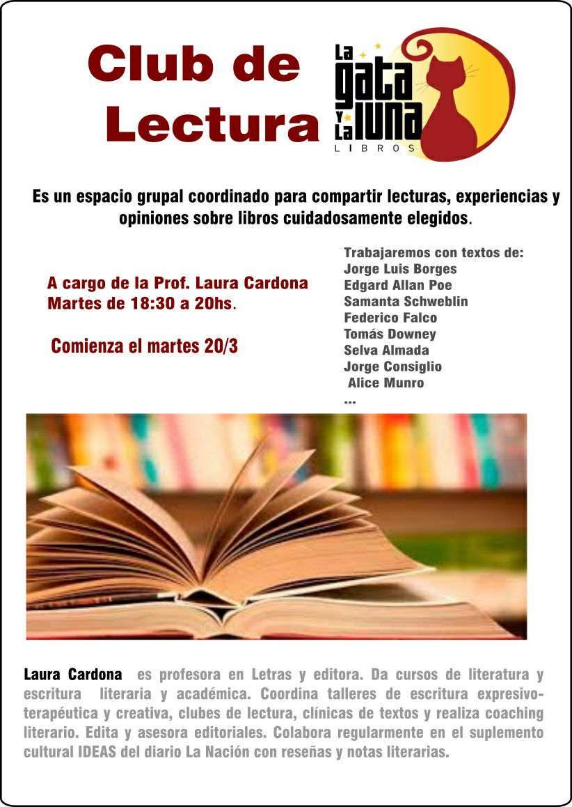
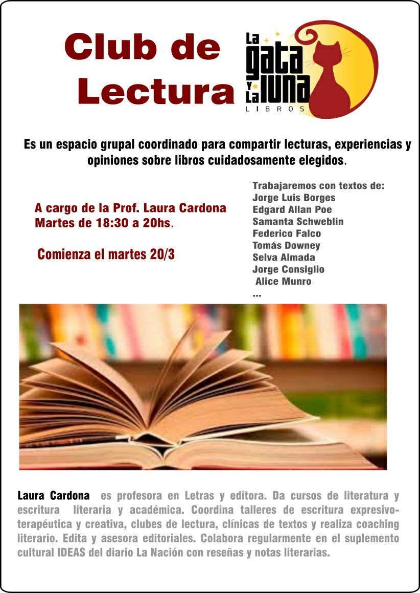

Información General
"La Gata y la Luna" abrió a principios de octubre del 2013 tras meses de trabajo de Santiago Martínez y Verónica Catinari. Ya lleva más de 10 años de venta de libros en los que también hubieron talleres y se gestionaron diversas actividades culturales, con el fin de promover la lectura en personas de todas las edades.
Esta librería no solo ofrece una vasta colección de títulos que abarcan todos los géneros y disciplinas, sino que también se ha convertido en un punto de encuentro para la comunidad. Aquí, autores locales presentan sus obras, se realizan talleres de escritura creativa y se llevan a cabo lecturas públicas que fomentan el amor por la literatura.
El personal de "La Gata y la Luna" está compuesto por apasionados lectores y conocedores del mundo editorial, siempre dispuestos a ofrecer una recomendación personalizada o a compartir una charla sobre el último best-seller o aquella joya literaria que puede haber pasado desapercibida.
En "La Gata y la Luna", se entiende que un libro es más que un simple objeto; es una puerta a otros mundos, un espejo en el que reflejarnos, una fuente inagotable de aprendizaje y entretenimiento. La librería se ha esforzado por crear un espacio inclusivo y accesible, donde todos se sientan bienvenidos y valorados, independientemente de sus intereses o nivel de conocimiento literario.
Talleres y Eventos

 

Redes Sociales
@lagataylaluna
La gata y la luna

lagataylalunalibros@gmail.com